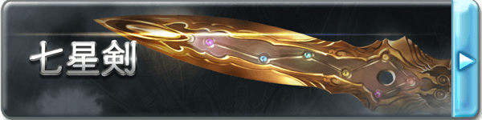

■七星剑（D+500）
镇压整个苍天之下的威胁、管理着十种拔群的力量的至高剑圣-希耶提所使用的长剑，被嵌入巨大刀身中的，是代表星星的七种光辉。虽然那个设计的意义已经失去了，但是刀刃上寄宿着确实的力量。
作为武器具有7L伤害，拥有特性【天星剑王】。
【天星剑王】
这把武器的攻击可以触及虚体与灵体。
■［聖刻］七星剑·真（C+1000）
散发出七色光辉的宝珠的真意是不落和镇护。切开昏暗世界的云霓的光辉，给森罗万象以难以抗拒的恐惧，将敌忾之心粉碎。
作为武器的性能提升，特性【天星剑王】获得提升，获得特性【统领】。
【天星剑王】
这把武器的攻击可以触及虚体与灵体，武器伤害额外提升1L，获得【破魔+3】【破甲+3】。
【统领】
现在【天星剑王】的效果会对七星剑周围十米范围内的所有友方单位所使用的武器生效。
■［聖刻裁］七星剑·○（B+2000）
元素的力量寄宿于至纯的灵宝之中，煌煌的宝珠绽放出只属于你的光辉，在其他人的手里七星剑将失去一切效果和能力，变为把普通的长剑。从以下几个词缀中选择一个作为七星剑的后缀，这将会使七星剑所造成的任意伤害转变为对应的类型，其上的宝珠也会变为对应的色彩。
焔:盛燃的红莲之火，挥动便会卷起热浪，在阴天降下火炎之雨，那份激昂能将遥远的天空灼烧，其对应的伤害为灼热。
雪:绝对零度之力，缠绕着将气力剥夺的白色瘴气，能将有形无形之物都转变为水晶的样貌，将永远的寂静强加于没有抗争沉默的连锁的方法的世界，其对应的伤害为冻寒。
界:脉动着的大地之力，大地呼应着歼灭的想法，仿佛有生命一般开始鸣动，依从于它的是世界本身，其对应的伤害为原本的物理伤害。
凪:让空气变得肃然的风平浪静之力，那能让狂乱的暴风也轻易恭顺的姿态，才与君临狂暴天空之巅的人相应，其对应的伤害为音波。
煌:将黑暗照亮的闪光，白色的光华从宝珠中绽放之时，所有的罪恶都将被裁决，没有人能够从看穿真实的裁决之光那里逃离，其对应的伤害为神圣。
煉:吞噬万象的暗之力，闪烁着妖艳光辉的宝珠能将世间万物迷倒，无论是意志强大的生者，抑或是没有意志的死者，所有的一切都将如其想要的那样，其对应的伤害为亵渎。
特性【天星剑王】获得提升。
【天星剑王】
武器伤害额外提升3L，获得【破魔+10】【破甲+10】【格挡+7】【幽冥】，并且在攻击检定上获得【8加骰】。
■［剣界決晶］七星剑·○○（A+4000）
拳套上延伸出光辉的佩剑，被选中者挥动之时，剑刃上将会绽放出如同夜空中的极星一样的光辉，将整个战场染上鲜艳的彩色。
对应在B级选择的属性，七星剑的后缀将会再次转变，并带来新的效果。
焔→紅天:如同红莲一般燃烧的宝珠所认可的，是强力胎动的生命的光辉。将天地万物化为灰烬的无与伦比的劫火让黑烟熏染，指向了通向彼方的天道。武器攻击造成的伤害将会带来等于胜出数的【燃烧】 ，正常豁免。
雪→蒼天:睿圣漩涡中的宝珠所认可的，是总括真理的贤哲的光辉。寒冷的波涛吞噬了所有堵塞之理，指向了通向彼方的天道。武器攻击造成的伤害将会带来等于胜出数的【冻结】，正常豁免。
界→轟天:孕育创世之子的宝珠所认可的，是不可动摇的神气的光辉。将承载天空的大地所掌握的力量，创造出独一无二的回廊，指向了通向彼方的天道。武器获得【眩晕】特性，并且威猛提升10点
凪→疾天:象征着天之情绪的宝珠所认可的，是达到了万理一空的境界的灵魂的光辉。几万时流动的风净化了万物的污秽，指向了通向彼方的天道。武器获得【超级贯穿】特性，并且高速提升10点
煌→白天:散发着圣德天光的宝珠所认可的，是重视缘分的珍贵心灵的光辉。编织的思念绝对不会破碎，被捆绑的缘分指向了通向彼方的天道。武器获得【光明】特性，持有者在死亡后，灵魂会被保护在武器中，若被带回主神空间则可以支付C+1000重塑身体而复活。
煉→黒天:拥有暴食的宝珠所认可的，是抓住一切的无尽渴望的光辉。无限喷出的黑暗平等地消灭善恶，安宁地呼啸，指向了通向彼方的天道。武器获得【黑暗】特性，被该武器击杀的单位将无法以任何方式复活，这是一个S级的诅咒来源效果。
此外七星剑作为剑的性能达到了极致，获得【神兵】特性。这一阶段的七星剑无法被任何方式破坏。【天星剑王】与【统领】特性获得提升。
【天星剑王】
武器伤害额外提升10L，获得【破魔+17】【破甲+17】【格挡+17】【威猛+7】【幽冥】，并且在攻击检定上获得7点附加以及【8加骰】。
【统领】
【天星剑王】的覆盖范围提升为100米，每轮一次，七星剑的持有者可以瞬间移动至一个受到【天星剑王】增益单位的身边。
▓▓七星剑法-北斗大極閃
若无特殊说明，该技能树下的技艺只能由七星剑为媒介来发动。
■百万兵刃（D+500）
◆发动动作:反射
◆使用間隔:无
◆効果時間:永久/一次
当由自身以外的单位发动的剑招在面前施展时，自身可以使用一个反射动作将其记录在七星剑之中，形成对应的【剑拓】。
消耗【剑拓】以及对应该剑招的动作，自身可以召唤出释放出该剑招的单位，随后在自身的控制下如同其本人施展一样，计算攻击DP与效果，而你无需支付释放此剑招所花费的能量。需要注意的是，你只能召唤那个单位的“通常情况”来释放此剑招，而无法做到诸如“他持着一把S级神剑释放这个剑招”，或者“他正处于燃烧生命的强大状态释放这个剑招”，乃至于“他被其他人加过了buff释放这个剑招”——你能召唤的只是“通常状态”，或者说，仅有常驻效果的那个单位。
特殊的，如果【剑拓】记录的能力所具有的使用次数限制，或者除能量以外的其他代价，则它们都视为你释放了一般来判断次数或支付代价。例如，如果你记录了两个“每个场景只能使用1次的剑招”的【剑拓】，则你在释放第一次该剑招的【剑拓】后，第二个【剑拓】就无法使用；如果你释放了一个“释放后3轮会无可避免的死亡”的【剑拓】，在释放后3轮你也会无可避免的死亡。其他情况由ST判断。
七星剑最多持有2个【剑拓】，只能记录无支线的剑招。
本能力可以以差价升级到C/B/A/S级，若如此做，可将可记录的剑招提升至D/C/B/A级。也可以在对应等级重复购买这个技能，来提升对应等级的【剑拓】数量上限。
■纹章（D+500）
◆发动动作:迅捷
◆使用間隔:无
◆効果時間:立即
立刻记录一个自身持有的剑招并将其转化为【剑拓】，该【剑拓】可以如同正常【剑拓】一样使用并记入数量上限中，但无视等级上限。
随后自身回复1L伤害和1点能量，回复的能量计入每日回复上限。【医疗点数：12】
■无限创造（C+1000）
◆发动动作:标准
◆使用間隔:无
◆効果時間:立即
选择10米范围内任意数量的目标发动，对每个目标各进行一次攻击。
随后自身回复2L/1A伤害和1点能量，回复的能量计入每日回复上限。【医疗点数：24】
■雄狮之心（B+2000）
◆发动动作:整轮
◆使用間隔:7轮
◆効果時間:立即
选择10米范围内任意数量的目标发动，这些单位恢复7点意志，7L/3A伤害和7点能量，恢复的能量计入每日回复上限，回复的意志和其他回复意志的能力每日合计不能超过沉着值。【医疗点数：108】
■七星的辉煌（A+4000）
◆发动动作:整轮
◆使用間隔:一日
◆効果時間:一轮
选择100米范围内任意数量的目标发动，这些单位恢复10点意志，10L/5A伤害，回复的意志和其他回复意志的能力每日合计不能超过沉着值。【医疗点数：108】
选择的单位在本轮内所有检定获得【8加骰】并且每个检定可以进行两次选择其中一个作为结果.